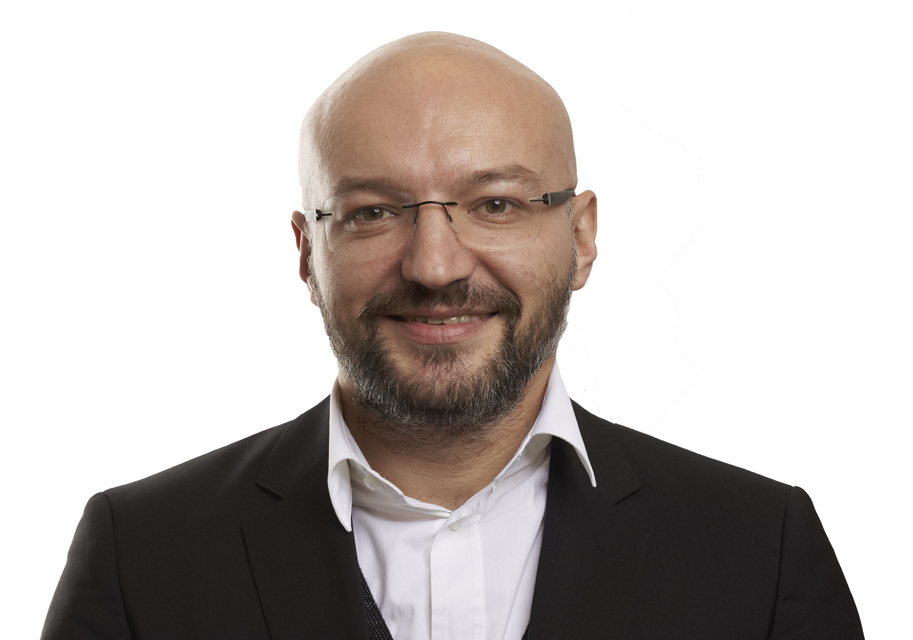

“He, who believes to be someone, has ceased to become someone.” — Socrates

Born on 9 October 1985 in Bosnia and Herzegovina, I have been living in Austria since 1992, growing up in the Mühlviertel region of Upper Austria.
After the Federal Higher Technical Institute (HTL) in Leonding, I studied Hardware/Software Systems Engineering and Embedded Systems Design at the University of Applied Sciences Upper Austria in Hagenberg, earning my MSc in 2010.
My professional career spans RF system engineering, digital design, and six years designing mixed-signal ASICs as a member of the Apple Technology Engineering Austria team in Linz — at the very frontier of consumer silicon.
From May 2017 to October 2025 I served as a Municipal Councilor of the City of Linz. In January 2026 I stepped away from the desk to become an Explorer by Design — a self-directed study in global systems, human-centric thinking and real-time adaptation.
Worldwide
The best engineers understand the world they build for. After 15+ years in the industry, a self-directed study in global systems, human-centric design, and the ultimate test of adapting to new variables in real-time.
Apple Technology Engineering Austria B.V. & Co. KG · Linz
RTL design of digital functions on mixed-signal ASICs — block/function definition, specification, design, simulation and unit-level verification.
City of Linz · Linz
Eight years in elected office, serving on committees spanning economy, innovation, climate, security and health. Concurrently held supervisory board mandates at IKT Linz GmbH and Creative Region Linz & Upper Austria GmbH.
DMCE — Danube Mobile Communications Engineering (Intel) · Linz
Product documentation, release management, workflow and process automation, collaboration management, and digital development across multiple projects.
Research Institute for Integrated Circuits, JKU · Linz
RF system engineering research with focus on antenna tuning and impedance mismatch compensation in mobile terminal radios.
VHDL, SystemVerilog, SystemC — block definition through mixed-signal ASIC
UVM, Formal Verification, STA, CDC/RDC, DFT; TCL-driven regression; Synopsys VCS / Verdi, Cadence Xcelium
Synopsys DC / PrimeTime / VCS / Verdi; JasperGold
Python, C, C++, C#, Java, Assembler; Bash, TCL, Make, Perl, SQL, JavaScript
LLM Orchestration, Agentic Systems, MCP, Fine-tuning; Claude · GPT-4o · Gemini · Llama; Claude Code, OpenAI & Anthropic APIs
Git, Emacs, Unix, macOS, SVN, Clearcase, Perforce, LaTeX
Adobe InDesign (Expert), Illustrator (Advanced); Blender; Bambu Lab P1S with AMS — multi-material FDM
Supervisory board governance (2 mandates, 8 yrs); Municipal Councilor (8 yrs); UGL-certified; technical mentoring
Africa’s highest peak — summited 18 July 2018
Pilot training for Sailplanes + TMG (EASA); Radiotelephone Operator Certificate for Aeronautical Services
30+ countries across five continents — and counting
Jogging, swimming and hiking
Data snapshots across the world — geography, climate, population, economy and more.